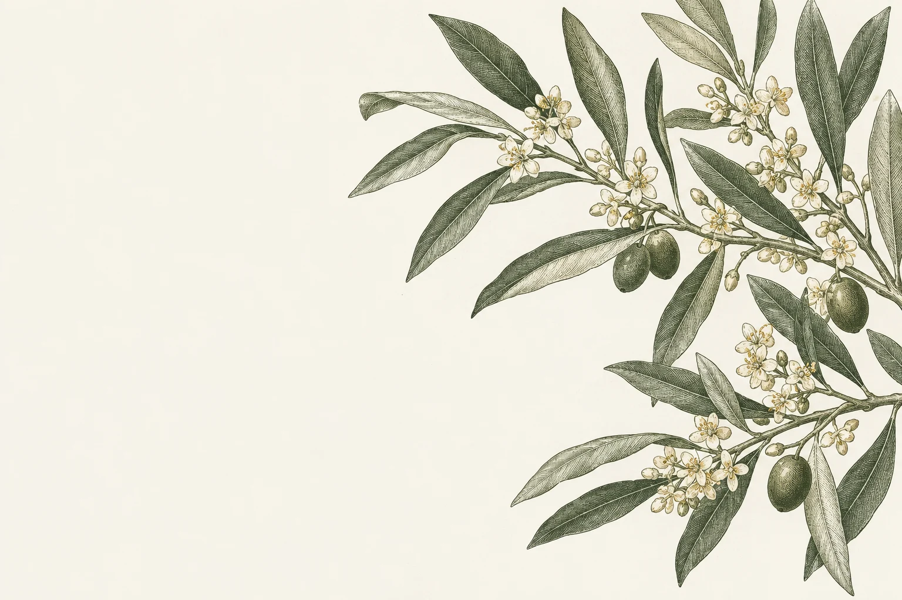

CLUB DE LECTURA
El jardín
de la lectura
Los libros que hemos ido leyendo juntos.
Algunos nos encantaron, otros no tanto.
Nuestro jardín
ÍNDICE LITERARIO
Autores
LECTURAS COMPARTIDAS
Miembros
20 turnos de elección
23 obras o textos
9 miembros que han realizado propuestas